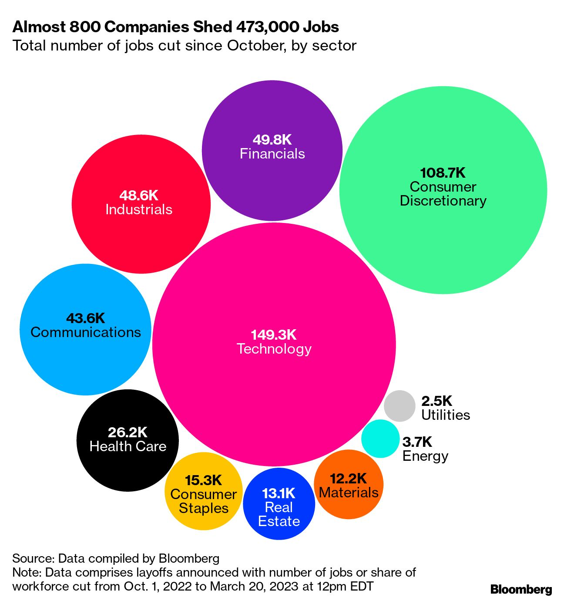

Fred's News Channel
每日新闻
投资观点
常用工具
3月22日早间新闻
根据彭博社及路透社新闻编辑整合
银行业导致的波动在昨日完全被消除。第一共和银行股价回弹30%，其他全部板块均回调。
详情链接
木头姐的基金今年的YTD 增长为23%，远远超过S&P500。但投资者还在用脚投票，ARK基金的资本依旧在持续的外流。原因则是ARK去年回调了67%，木头姐共损失了20亿美元。
详情链接
普京对于习近平倡议的停战协定持支持态度。于此同时，欧美都对中国倡导的停战协议不给予支持，认为其偏向于俄方，与此同时，乌克兰刚刚获得世界银行的156亿美元贷款。
详情链接
个人观点：
今天美联储会宣布最终的升息幅度。以投资角度来看，也许25个基点的升息会是最安全的。无论升更多，还是不升息，都会加大市场的反应。另外，以下是各板块的裁员情况总览。

查看其他日期的新闻
Fred Rong
MAS Registered
RF-300558704
投资咨询,欢迎预约！
立即预约